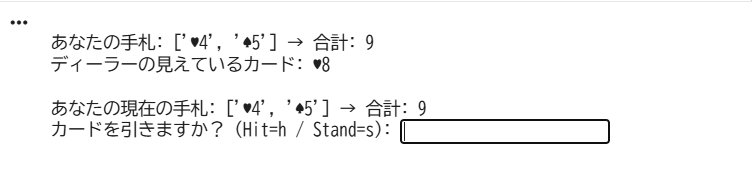
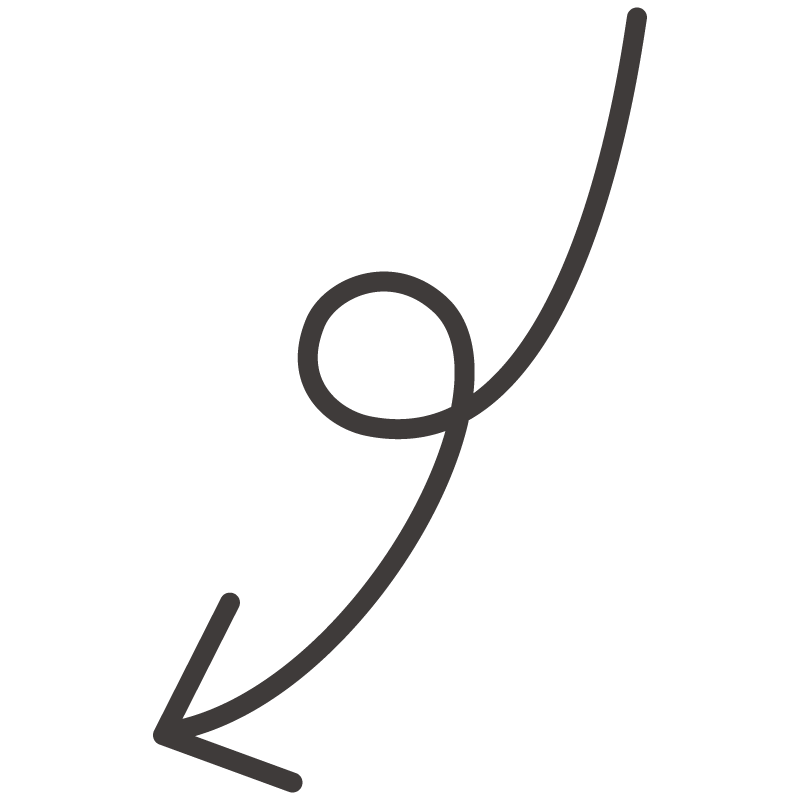
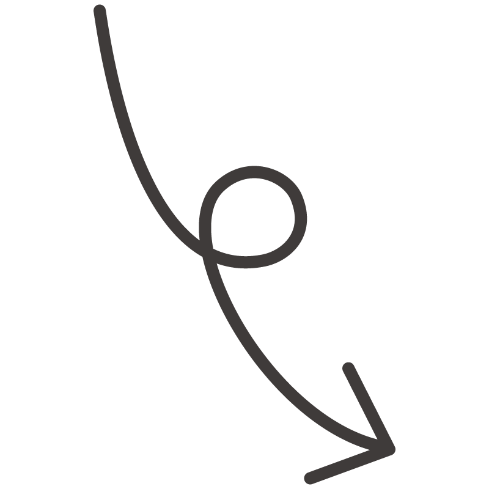
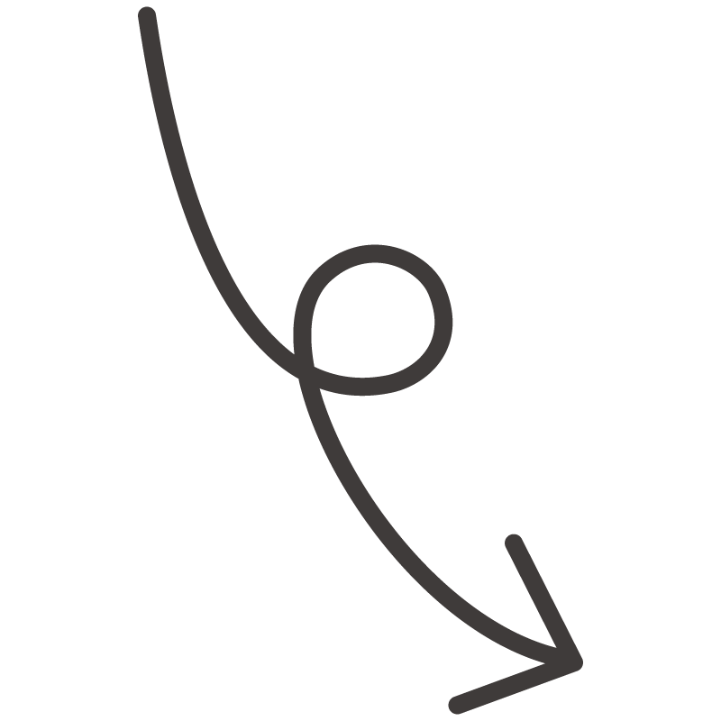
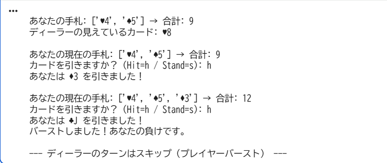

少しルールを変えたブラックジャックを作成しました。プレイヤーを操作してディーラーに勝ってください。
このブラックジャックの簡単なルールを説明します。
- プレイヤーとディーラーに2枚ずつカード配られます。ディーラーのカードの内、1枚は表示されます。
- プレイヤーはカードの点数の合計が21になるようにカードを追加します。
- プレイヤーが「h」を入力し、21以下ならまたカードを追加するのか尋ねられます。
プレイヤーが「s」を入力すると、ディーラーのカードがオープンされます。
- 点数が21に近い方が勝ちです。21を超えた場合、負けになります。


 


👉 こちら: から体験できます。